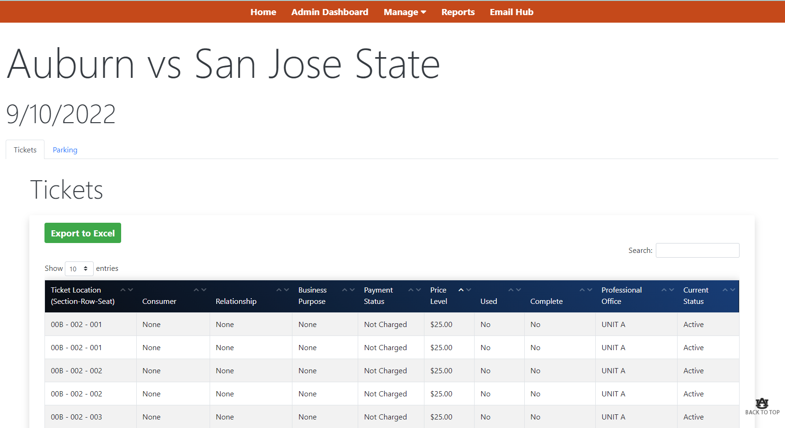
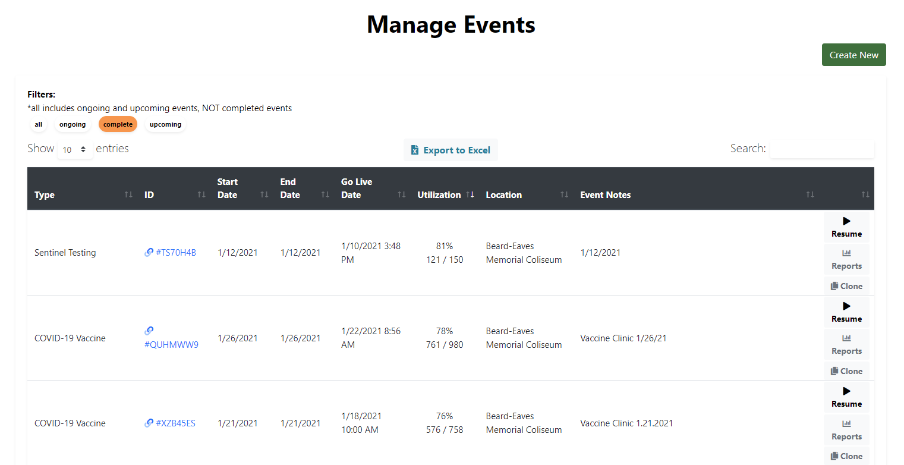
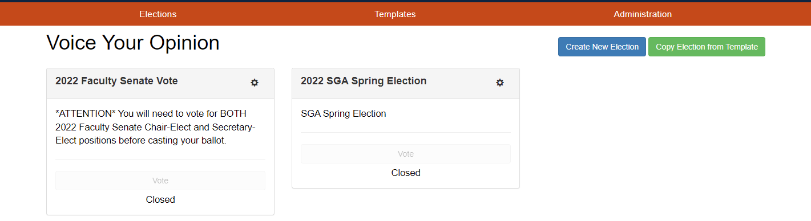

Isaac Weiss
Full-stack Developer
Auburn University senior majoring in Computer Science. Passionate about software development, with a focus on web and game development. Notable programming skills include Microsoft .NET Framework, ASP.NET MVC, C#, Microsoft SQL Server, CSS, HTML, Bootstrap, and JavaScript.
Featured Projects
Auburn University Event Ticketing
Worked with a small team to develop a web application that allows offices within Auburn University to transfer event tickets and parking passes to other offices and see an audit trail for both types of records.
Worked heavily on the reports pages, allowing users to see all tickets and parking passes that match a certain filter, and see a user report.
Implemented management tools for admins to create, edit, and delete certain fields within the application (i.e., creating events)
Pharmacy Scheduler / Healthy Tigers
Worked with a small team to develop Auburn University's pharmacy scheduler (used by Auburn University employees and community members during the COVID-19 pandemic).
Also developed Auburn University's scheduler for "Healthy Tigers", an employee wellness program. Worked on site-wide bug fixes for both projects.
View Pharmacy SchedulerAuburn University Voting
Worked on implementing new features and bug fixes for Auburn University's voting site, which was used for Student Government Association elections.
View Auburn University VotingWork Experience
See my complete work history on LinkedIn.
Software Developer Co-op, Campus Web Solutions Auburn, AL
May 2021-Present
Co-op for three semesters at a web development company specializing in web applications for Auburn University
Key contributions:
- Worked as a full-stack developer, created web and mobile application software for students and faculty of Auburn University
- Worked in an agile development environment with a team of developers and tracked agile project management through Jira
- Utilized tools for front-end web development such as HTML, Razor, CSS, Bootstrap, JavaScript, jQuery, and Ajax
- Utilized tools for back-end web development such as Microsoft .NET Framework, ASP.NET MVC, C#, LINQ, and Microsoft SQL Server
- Created video tutorials for clients and used Microsoft SharePoint to create documentation for certain technical features
Cashier and Bagger, Publix Auburn, AL
June 2018-October 2020
Managed all curriculum for the adult programs. Created teaching materials and implemented instructor training across 20+ Canadian chapters.
Maintained robust customer-business relations by creating lasting relationships with customers, ensuring repeat and loyal clients.
Education
Auburn University - Auburn, AL
Samuel Ginn College of Engineering
Bachelor of Science, Computer Science
Minor: Business
August 2019 - December 2023
GPA: 3.96/4.00
Dean's List: All Semesters
Scholarships: Spirit of Auburn Presidential | Bonnie Arnall (2019) | ADTRAN (2020)
Auburn High School - Auburn, AL
Diploma, May 2019
GPA: 4.20
AP Scholar with Distinction
National Honor Society
-
Programming
- C, C++, C#, Java
- Microsoft .NET Framework
- ASP.NET MVC
- Entity Framework and LINQ
- Microsoft SQL Server
- HTML, Razor, CSS, Bootstrap
- JavaScript, jQuery
-
Other skills
- Microsoft Office 365
- Quick learner
- Tenacious work ethic
- Positive team member
- Effective communicator
- Detail-oriented